写于2020年
北魏和北魏六镇
对于中国历史的业余爱好者而言，北魏在历史上是一个非常重要的承前启后的朝代。自西晋五胡乱华以来，中国北方群雄逐鹿，各北方少数民族和汉族先后建立了二十多个割据政权。公元439年，由鲜卑族创建的北魏政权再度统一中国北方，实现了南北朝的对峙。
为了防守北方的柔然人，北魏在其北方边界上建立了六座军事城镇，史称北魏六镇，从西到东依次是沃野镇、怀朔镇、武川镇、抚冥镇、柔玄镇和怀荒镇。北魏以军事立国，军人在国家的地位很高。但是，自北魏的都城从平城迁徙到洛阳后，北方六镇的地位下降，鲜卑族和汉族、武将与文官、贵族与平民的矛盾也随之激化。公元524年，沃野镇民破六韩拔陵发动起义，起义很快席卷整个六镇，北魏六镇的武将们或者加入起义军，或者参与镇压起义。这场起义极大地破坏了拓跋/元氏鲜卑的政治基础，北魏从此进入六镇武将把持国政的时代。
在六镇起义之后，北魏短暂地进入军阀尔朱荣的控制。尔朱荣死于宫廷刺杀后，北魏分裂为以怀朔武将高欢控制的东魏和以武川武将宇文泰控制的西魏。在这两个军事集团的竞争中，以宇文泰为代表的武川集团最终胜出。这一集团实际上是部分史学家所说的关陇集团的前身。隋文帝杨坚之父杨忠和唐高祖李渊之祖父李虎都来自这个集团。
最终，隋朝在北周的基础上出现在中国历史的画面中。公元589年，隋军南下灭陈，再度统一中国，结束了西晋末年中国将近300年的分裂局面。隋朝二世而亡，中国迎来了强大的盛唐王朝。某种意义上，我们可以说，北魏奠定了隋唐统一盛世的政治基础。
北魏六镇城址及其讨论
北魏去今一千多年，北魏六镇所在地方已经发生了沧海桑田的巨大变化。迄今为止，学者们对于北魏六镇的遗址仍然有不少分歧。笔者参考了一些文献1 2，大体上列出北魏六镇可能的城址：
表1 北魏六镇遗址列表
| 六镇 | 古城今名 | 今地址 |
|---|---|---|
| 沃野镇 | 根子场古城（后期） | 内蒙古乌拉特前旗苏独仑乡新光村 |
| 怀朔镇 | 白灵淖城圐圙古城 | 内蒙古固阳县城圐圙村 |
| 武川镇 | 二份子古城 | 内蒙古武川县二份子乡二份子村 |
| 希拉穆仁城圐圙古城 | 内蒙古达茂旗希拉穆仁镇哈日乌苏村 | |
| 抚冥镇 | 乌兰花土城子古城 | 内蒙古四子王旗乌兰花镇土城子村 |
| 柔玄镇 | 克里孟古城（或说牛川镇） | 内蒙古察右后旗韩勿拉乡克鲁孟村 |
| 哈拉沟古城 | 河北省尚义县三工地镇土城子村 | |
| 怀荒镇 | 张家口张北县 | （尚未找到城址） |
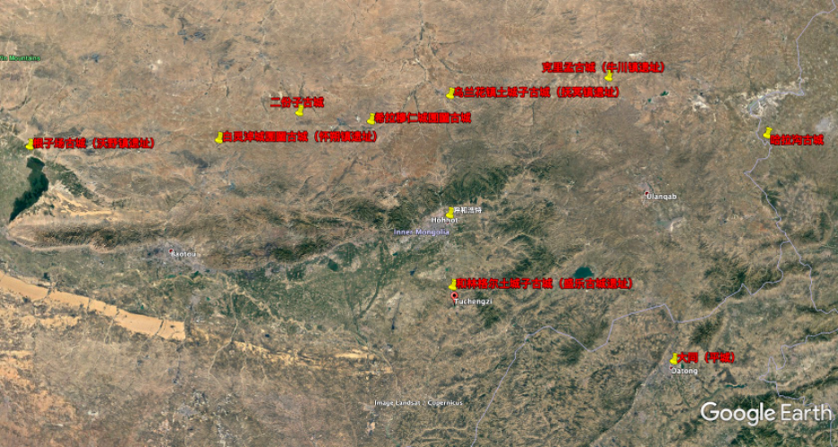 图1 各古城遗址在地图上的位置
作为业余的历史爱好者，笔者显然无法考证这些争议，留待专业人士判断。笔者花了一周的时间，自驾寻访这些遗址，抒发一些怀古的幽思吧。对于业余人员，按照导航找到这些地址已属不易，不少遗址已经几乎湮灭，许多地方都成为农田或者草原，业余爱好者甚至身在其中而不知何处。经过几处遗址，笔者发现，最好的游历方式，是参考专业人士绘出的古城图样，然后比对谷歌地图的卫星照片。以下逐个说明笔者探访的古城的情况。
根子场古城
根子场这个地名在现在的导航软件上已经找不到了，多篇论文或者网络文章记录根子场古城位置在苏独仑乡东南5千米处。按照这样的指导，业余人士根本无从下手。笔者先导航到苏独仑乡，在乡上加油站询问3才得知，以前的根子场，现在叫新光村，于是按照导航新光村顺利到达4。去新光村有部分在修路，基本上小轿车可以通行。到了村子之后，村民告知古城就在村子南面。寻着方向找去，就可以看到国家重点文物的标志，此标志在古城东城北墙处。
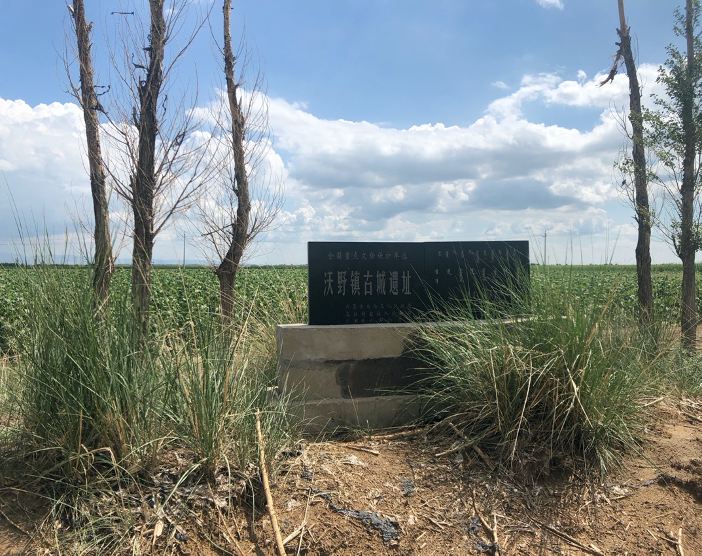
图2 沃野镇古城遗址国家重点文物（2006年）
通过论文和卫星地图可以帮助在现场辨认古城：
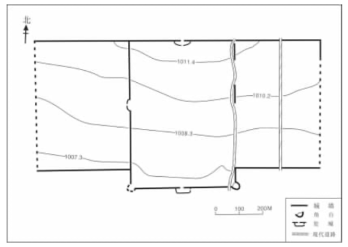
图3根子场古城平面图（来自注2）
古城大约东西1200米，南北500米。
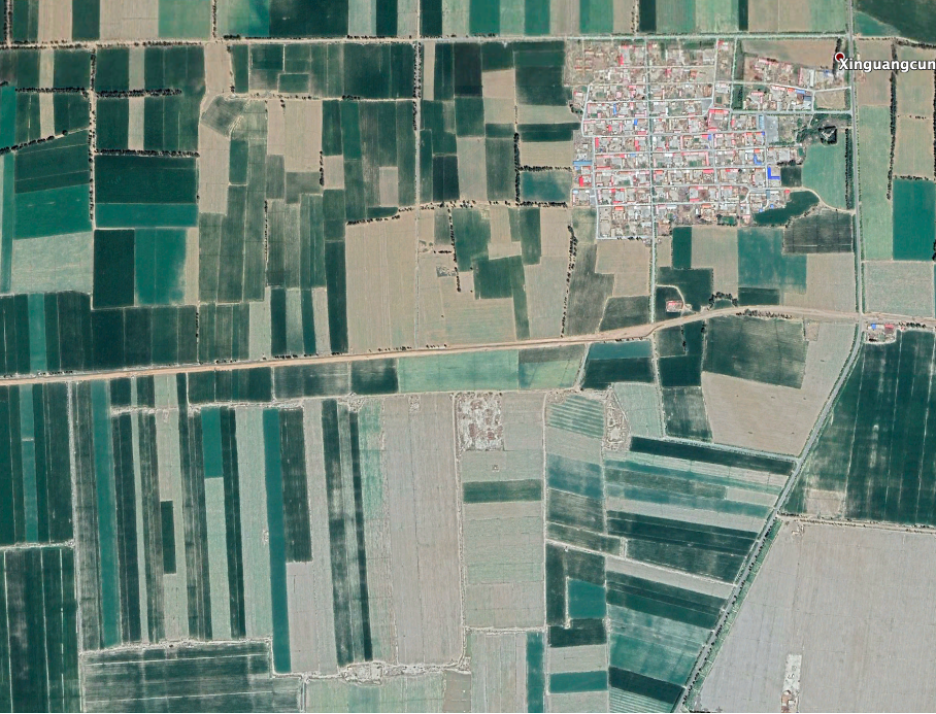
图4 根子场古城卫星地图（谷歌卫星地图7/9/2019，城北墙中心点41°08’34.39”N，108°47’41.72”E）
谷歌地图上标注位置点是不正确的5，上图中的村子即是新光村或根子场村，村子西南面长方形轮廓即是沃野镇古城。从论文图样或卫星地图上可以看到，古城东西两面的城墙都已经被毁坏了。在古城现场可以看到稍高出地面的夯土城墙遗址，脚踩上去很硬，在古城范围内偶尔可以看到废旧的陶片、瓦片，可以辨认出北魏典型的布纹。
白灵淖城圐圙古城
固阳县的城圐圙村在苹果手机的地图上能够看到，可以以此为目的地导航。如果使用其他软件，网上有攻略，可以导航仁太和。从固阳县往北按导航延210国道到达仁太和乡继续往前，就有一个怀朔古城的指示牌，在一条水泥路右转，基本上沿着这条路走10公里就可以到了，左转离开水泥大路过一座小桥就可以看到村庄了。不用进村庄，路边有一块很大的石头牌子，上面隐约可以看到“怀朔”字样。牌子前有条机耕道6可以左拐，往前大约500米就可以看到国家重点文物的标识，标识位置在古城的东北角外。
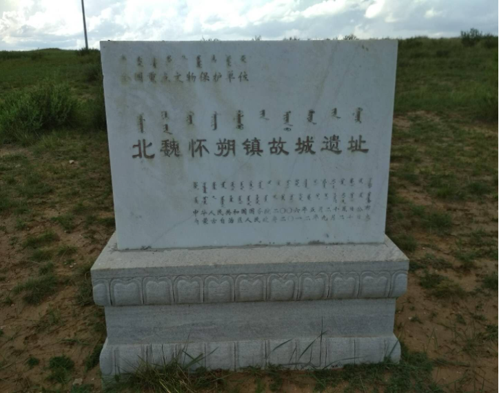
图5 怀朔镇故城遗址国家重点文物（2006年）
同样可以对照论文示意图和卫星地图：
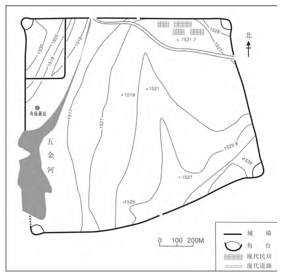
图6 白灵淖城圐圙古城平面图（来自注2）
此城形状不太规则，大约呈现1千米见方。
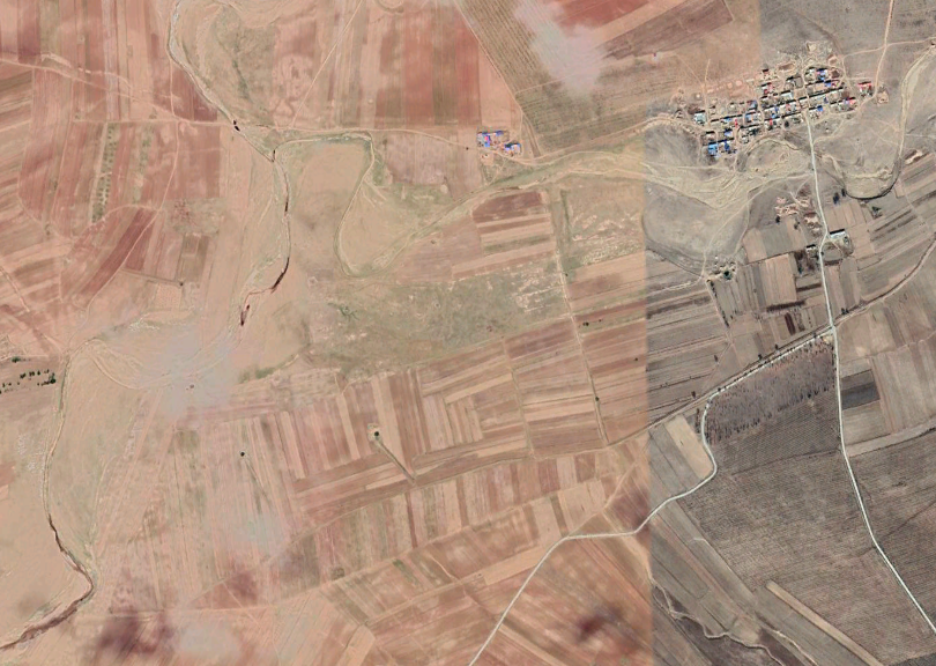
图7 城圐圙古城卫星地图（谷歌卫星地图11/7/2019，城东北角41°12’43.59”N，110°08’17.59”E）
笔者刚到达此城即碰上下雨，所以没有现场勘察，只是拍了几张照片。怀朔古城几乎全部成为农田，湮灭得比较厉害。从仁太和进来之后的这条水泥路比较窄，但是路面很好。而且，这一路7月份的风景相当好，白色的土豆花、黄色的油菜花和绿色的牧草相间，中间点缀着红灰色的村庄房屋，远处还有许多高高的风车和无线信号高塔，也给寻访古城遗址带来了舒爽的心情。
寻访古城中听到比较多的词是城圐圙（音库略），圐圙一词来自蒙语，意为栅栏围成的操场。这个词的汉字从形状看就是四面八方围起来，今译为库伦（即同乌兰巴托曾用名库伦）。城圐圙即是城墙。在内蒙古地图上可以查到不少城圐圙村，他们都是古时候的古城墙遗迹。
二份子古城
二份子乡二份子村在导航地图上可以直接导航。只是，根据学术论文，省道S104从二份子古城中穿过。但是现在的地图上标注的S104已经是一条新修的类似于非封闭高速路，走向也发生了改变，不再经过二份子乡。后来在路上可以看到路边还有老的S104的界石。二份子古城在二份子乡政府以西大约1.5千米的公路旁，开车时，在路边看到高起的一道小矮墙即是。虽然二份子古城无疑是北魏古城，但是它是否是武川镇还无定论，这座古城迄今为止还不是内蒙古区级文保单位，现场没有任何标记。央视曾经做过一期航拍的短视频。7
对照论文中的平面图：
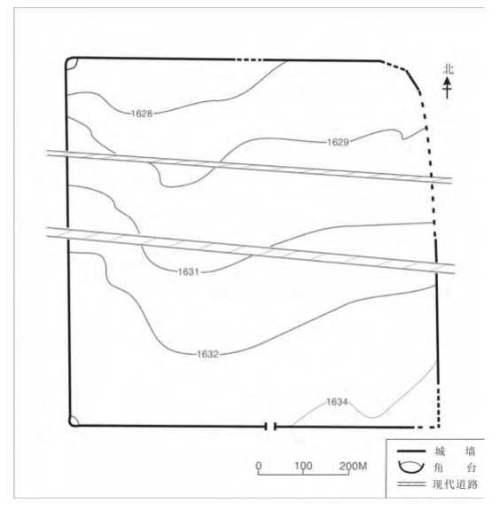
图8 二份子古城平面图（来自注2）
除东北角因躲避河道之外，古城非常方正，长宽均约750米。
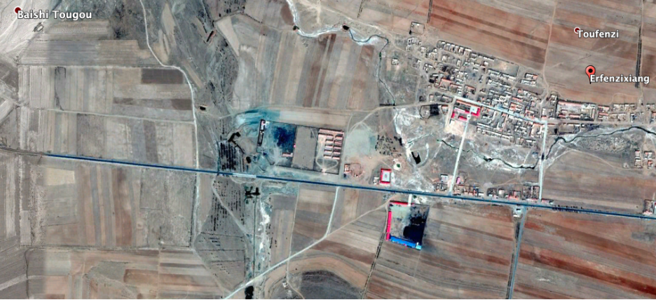
图9 二份子古城卫星地图（谷歌地图4/29/2013，古城西北角41°21’51.96“N，110°41’42.16”E）
图上东西向的公路即是旧S104省道，右侧建筑物群为二份子乡，左侧方形图样即为二份子古城遗址。古城内东南角是荒地，散见瓷片、瓦片遗物。
希拉穆仁城圐圙古城
希拉穆仁的城圐圙古城看到的资料较少，只说在希拉穆仁镇以西2.6千米的草滩地中。笔者到希拉穆仁镇上的派出所询问，其中当地的警察同志告诉我古城所在地。到了之后，发现古城在苹果地图上标明“哈日乌苏”的地方，在高德地图上，此处标为“同信部落接待点”。希拉穆仁城圐圙古城是内蒙古自治区文物保护单位，但是笔者在现场并未看到保护标识。
对照论文中的平面图：
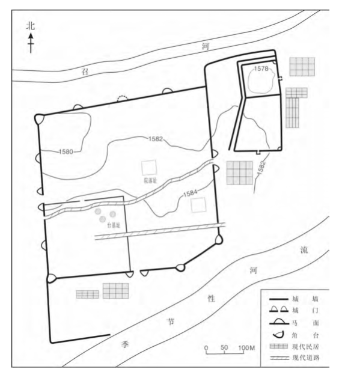
图10 希拉穆仁城圐圙古城平面图（来自注2）
这是所有古城中最复杂的一个，城外西侧有日字型小城，城南面还有一段护墙。这个城也比较小，大城的东西向和南北向均只有400多米。这倒是符合武川城又称“里城”的史料。
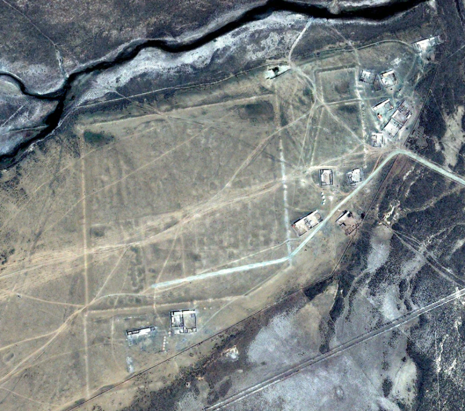
图11 希拉穆仁城圐圙古城卫星地图（谷歌卫星地图5/15/2011，城西北角41°19’37.04”N，111°11’24.82”E）
此处是一片草原，古城的城墙相对保留完整，城墙边上还能看到马面。城的北面就是召河，河滩的草地上有放牧的马和羊，风景秀丽。城西北角高处现在竖起了一顶敖包。
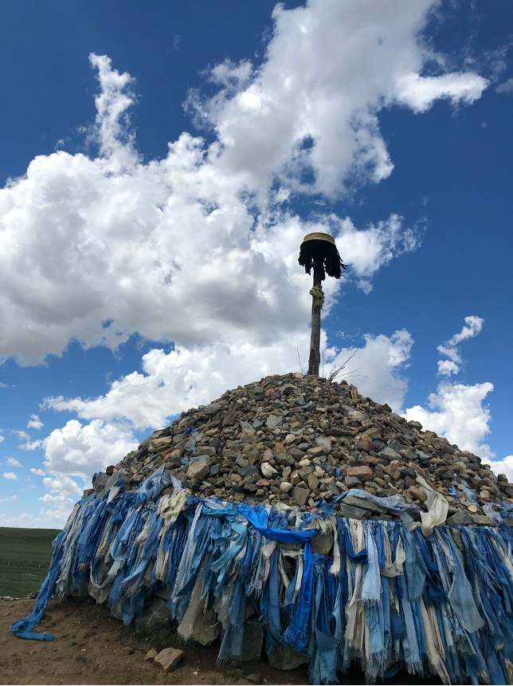
图12 希拉穆仁城圐圙古城西北角的敖包
乌兰花镇土城子
乌兰花镇土城子村在导航软件上都能找到。乌兰花镇即是四子王旗旗政府所在地，土城子村离乌兰花镇不远。土城子是这类古城遗址的另一类称呼，在内蒙古区域内能够搜索到不少土城子村。乌兰花镇的土城子村没有争议，学界公认这就是抚冥镇的遗址。这是内蒙古自治区文物保护单位，其标识在东城北墙中间位置，土城子村边上。
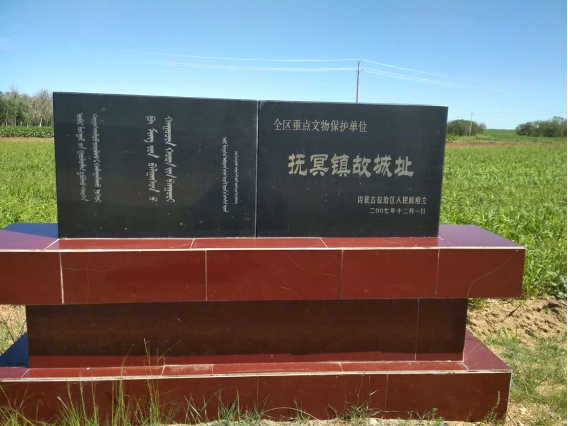
图13 抚冥镇故城址内蒙古自治区文物保护单位（2007年）
对照论文中的平面图：
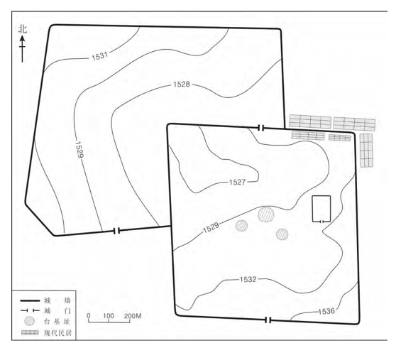
图14 乌兰花镇土城子古城平面图（来自注2）
这个古城的结构稍微有点复杂，由东西两座城相连而成。东城为主城，边长大约900米；西城大约边长为1100米。
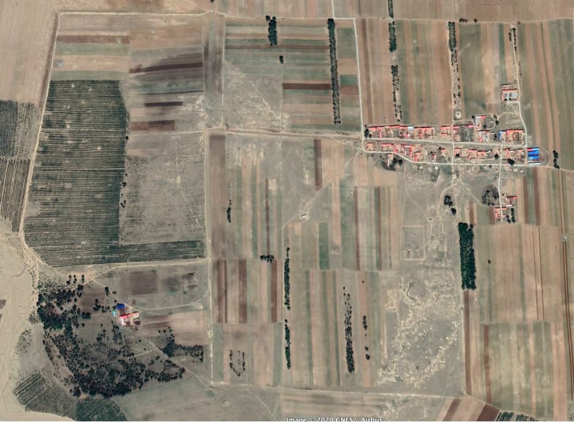
图15 乌兰花镇土城子村卫星地图（谷歌卫星地图6/18/2019，西城西墙和东城北墙交界点41°28’02.75”N，111°44’40.95”E）
图中村庄即是土城子村。城中有庄稼也有空地，能够看到北魏时期的瓦片等遗物。
克里孟古城
克里孟古城位置在察哈尔右翼后旗韩勿拉乡克里孟村北面大约500米。但是导航地图上标注为克鲁孟村。一条新修的柏油马路从古城中间穿过。克里孟古城的历史始于东汉，史学家考证这是北魏肇始的牛川镇。这是国家重点文物保护单位，标识就在公路边上。也有学者认为它同时也是北魏六镇中的柔玄镇。
古城平面图如下：
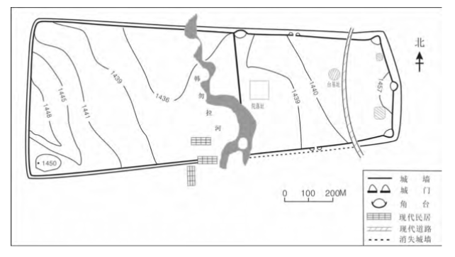
图16 克里孟古城平面图（引自注2）
古城形状不太规则，东西大约1500米，南北400-600米之间。分成东西两座子城。韩勿拉河从古城中流过。
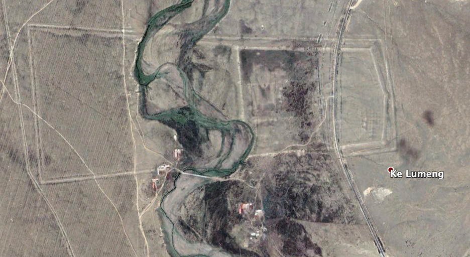
图17 克里孟古城卫星地图（谷歌卫星地图7/13/2013，东北角41°34’13.61”N，112°51’15.93”E）
这是此次游历过程中唯一一处被围起来的六镇古城，似乎当地政府准备对这个古城进行一些开发。克里孟是蒙语城墙的意思。这个古城在一片荒地上，城墙保存得相当完整，城内的瓦片、瓷片也最多，甚至有看到大型器物破碎的遗迹。卫星图上左边贯穿的是公路，重点文物保护单位的牌子在公路和城墙交界处道路西面。
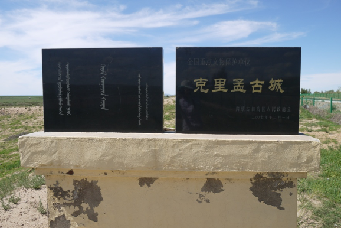
图18 克里孟古城全国重点文物保护单位（2007年）
哈拉沟古城
哈拉沟古城在河北省尚义县三工地镇土城子村，这个地址导航软件可以搜到。事实上，这个村子就在河北省和内蒙古自治区的交界处，古城范围有一小部分属于内蒙古，大部分属于河北。这个古城未被列为文物保护单位。
古城平面图如下：
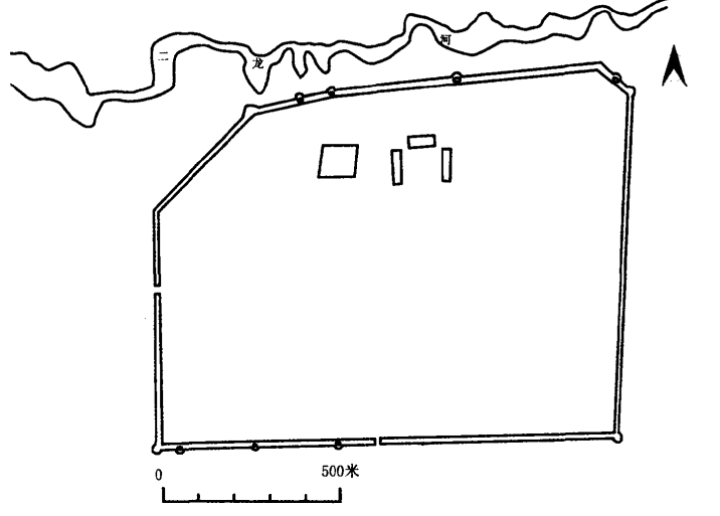
图19尚义县哈拉沟古城平面图
哈拉沟古城呈不规则形状，大致1千米见方。
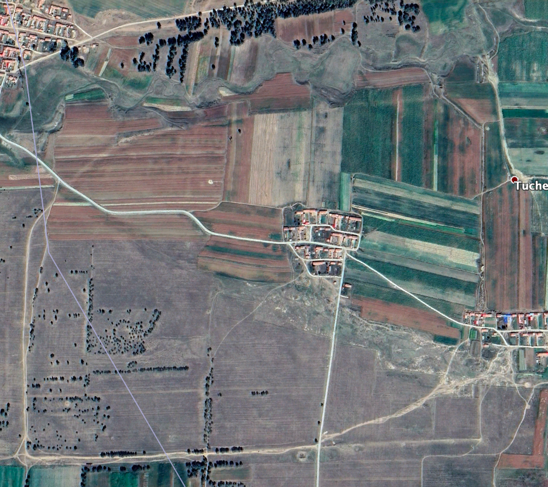
图20 尚义县哈拉沟古城卫星地图（谷歌卫星地图9/5/2019，西南角41°15’10.55”N，113°57’13.59”E）
卫星地图中间的村庄就是土城子村，右侧也是土城子村的一部分。卫星地图上淡蓝的斜线就是内蒙古和河北的省界。古城北面的河流已经干涸。古城南面以林地和荒地为主，北面种了庄稼。东面城墙很宽，上面变成了一条土路，从右侧的民居间有条路可以上去。东北角的斜边特别明显，上面有一块立好又被毁的文物保护单位标识。
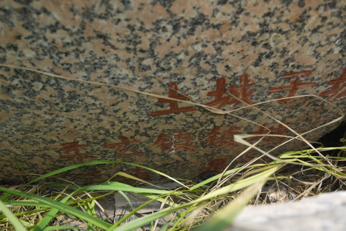
图21哈拉沟古城立好又推到的标识，依稀可见柔玄镇字样
盛乐古城
盛乐古城并不属于北魏六镇，但是这是北魏在平城以前的都城，正好顺路，所以也顺便拜访。盛乐古城的历史早于北魏，从古城中考古发掘来看，这座古城早在战国时期就存在了。此城汉代时为定襄郡成乐县，北魏拓跋鲜卑时期作为都城，后来唐朝时仍作为单于都护府。古城的位置在和林格尔县土城子村，由于重多考古发现，此处被认定为国家重点保护单位，还建设了一个盛乐博物馆。导航盛乐博物馆即可抵达。
盛乐博物馆是国内唯一的讲述鲜卑族历史的博物馆。博物馆就建在盛乐古城的边上，可以说是对此类古城保护和科普的最佳方式。
古城的平面图如下：
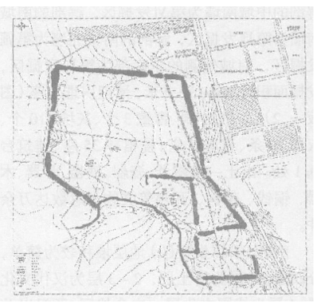
图22 和林格尔县土城子古城平面示意图8
古城的形状很不规则，各个时代的古城范围也不一样。可以在博物馆读到更具体的描述。
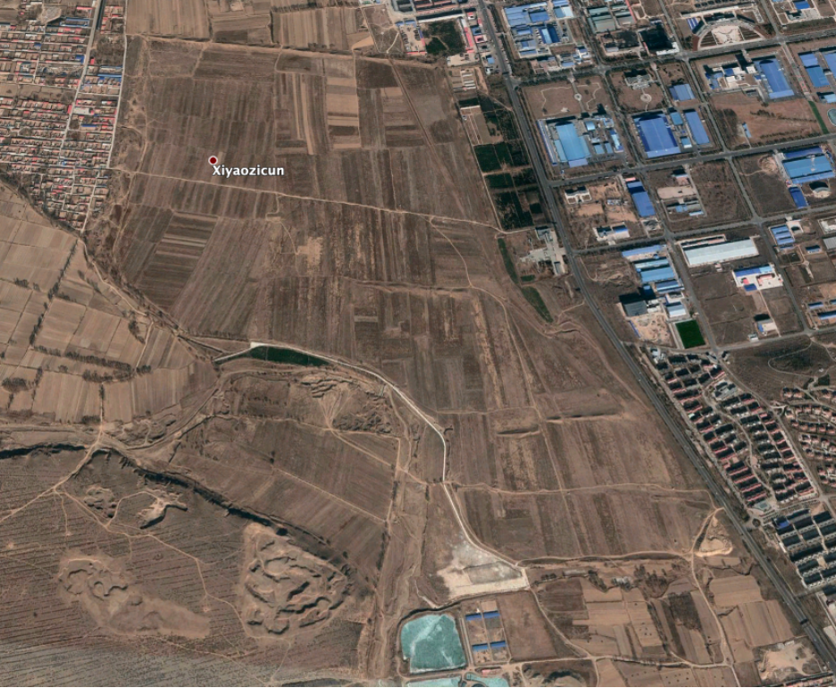
图23 盛乐古城卫星地图（谷歌地图2/13/2018）
笔者到达盛乐古城时天气非常不好，一时风雨大作，所以参观完博物馆，在瞭望台上看了看就离开了。古城有围栏包围，可能也不能进入。
大同博物馆与呼和浩特的内蒙古博物馆
考虑大同曾经是北魏拓跋鲜卑的重要都城平城，所以我们的旅行中特地安排经过大同，参观了大同博物馆、大同古城和善化寺。本来还打算去北魏冯太后的永固陵，但是去了之后发现当地正在修路，准备打造一条长城旅游线路，所以只能无功而返。
大同博物馆是当地精心打造的旅游名片之一，博物馆中有北魏时期司马金龙墓、宋绍祖墓出土的大量文物，讲述了拓跋鲜卑在平城时期的历史。
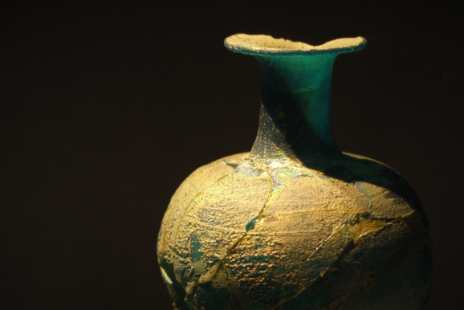
图24 大同博物馆：北魏时期当地玻璃工坊制造的玻璃器皿
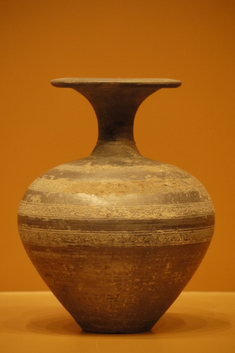
图25 大同博物馆：北魏时期的陶器，在古城遗址可以看到类似花纹的陶片
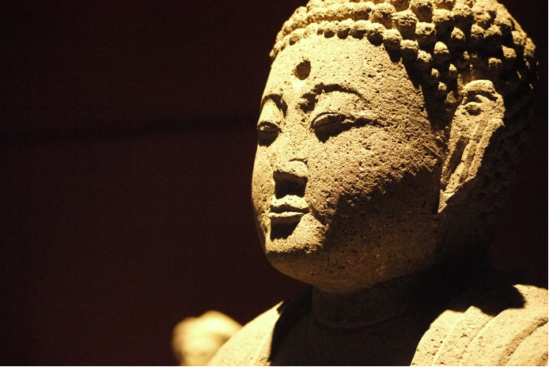
图26 大同博物馆：北魏时期的佛像雕塑
作为历史爱好者，每到一地一定会访问博物馆，内蒙古博物馆是必到之地。博物馆中的“草原雄风”馆陈列了内蒙古古代民族史，展出草原先民、东胡、匈奴、鲜卑、突厥、契丹等古代民族的文物精品，其中突出新石器时代红山文化和辽文化的历史。而“草原天骄”馆陈列古代蒙古族通史，以成吉思汗和大元王朝为点，展示从蒙古族起源到蒙元时代再到明清时期近千年的完整脉络。
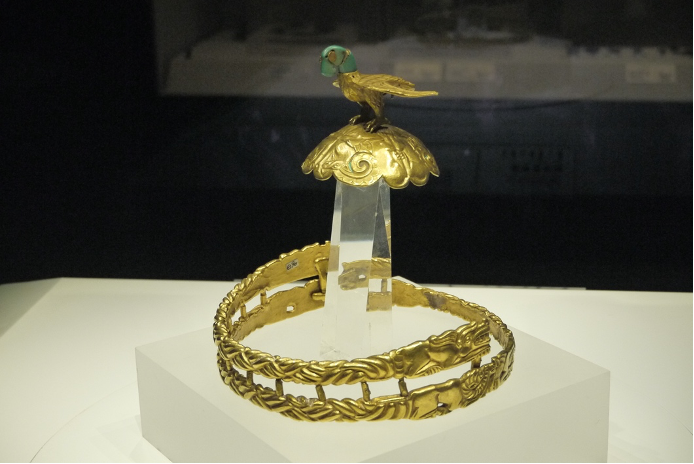
图27 内蒙古博物馆镇馆之宝：匈奴鹰顶金冠饰
游历路线
7/8月是草原旅游的旺季，草原上不少植物正处花期。而且内蒙古中部夏季天气凉爽，也适合避暑。今年恰逢新冠肺炎，我去的时候，旅游正在恢复，但是沿途旅馆不紧张，基本上提前一天预定均可。
这个路线并非传统旅游路线，所以并不拥挤，当然也没有合适的公共交通，只能选择租车或者包车。我的游历路线是：
- 呼和浩特 - 乌拉特前旗苏独仑乡新光村（沃野镇）- 包头（可在路上去美岱召）
- 包头 - 固阳县白灵淖乡城圐圙村（怀朔镇）- 达茂旗百灵庙镇（可在路上去五当召、固阳秦长城）（可在百灵庙镇参观百灵庙）
- 达茂旗 - 武川县二份子乡二份子村 - 达茂旗希拉穆仁镇哈日乌苏村 - 呼和浩特（或武川，呼和浩特居住条件更好）
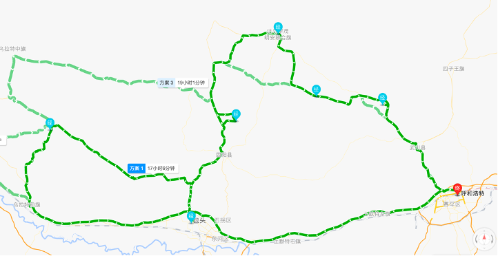
图 28自驾路线上：呼和浩特——乌拉特前旗——包头——固阳——达茂旗——呼和浩特
- 呼和浩特（或武川）- 四子王旗乌兰花镇土城子村（抚冥镇）- 察右后旗韩勿拉乡克鲁蒙村/克里孟村（牛川镇）- 乌兰察布
- 乌兰察布 - 河北尚义县三工地镇土城子村 - 大同
- 大同 - 永固陵（冯太后墓）- 大同博物馆 - 大同古城
- 大同 - 内蒙古和林格尔县土城子村（盛乐古城、盛乐博物馆）- 呼和浩特（路上可去青冢/昭君博物院）
- 在呼和浩特可去内蒙古博物馆
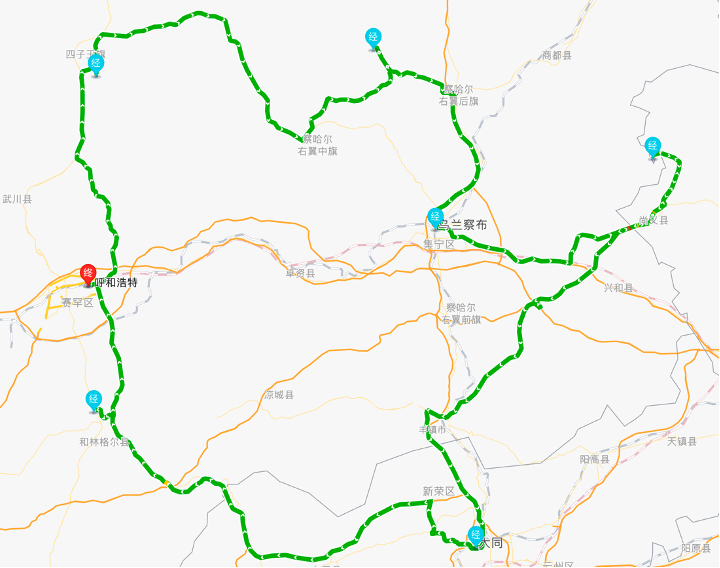
图 29自驾路线下：呼和浩特——四子王旗——察右后旗——乌兰察布——尚义——大同——呼和浩特
其他
首先，如果旅游者对历史并无很大兴趣，在这些古城只能到地点拍个照片，一些古城看上去可能和荒地、庄稼地并无太大区别，您可能会感觉无聊。前面谈到，这个路线本身就经过一些风景秀美的草原地带。内蒙古中部旅游资源丰富，如果旅游者感兴趣，除了上述北魏人文景点外，还可以专门去一些传统的风景区或参加一些旅游游乐项目。另一方面，对于有更多时间的人文旅游爱好者，这条路线或者附近还有不少其他时代的历史人文景点，包括长城、阴山岩画、麻城城址、百灵庙、集宁战役旧址等等。
以上旅游线路的路况条件很好，除了极少数最后一段距离是土路或者有修路情况，小轿车完全可以通行，如果下雨（夏季草原多雨），修路情况小轿车需要小心通过，有些土路则不建议小轿车通行。草原上路直车少，如果租车自驾的话需要小心，不要速度过快，不要疲劳驾驶。
内蒙古草原盛产牛羊肉，与内地相比膻味要小很多。我在包头吃了非常鲜嫩的羊排，不过也要当心不要吃太多，不然不易消化。大同的餐饮非常有特色，价格也便宜，值得尝试。在旅游路途上，可能时间不合适，也需要准备一些方便米饭或者干粮。
此外，需要注意的是一些地区是鼠疫疫区，如果在鼠疫流行时段，建议不要前往。其他时段，请注意不要和野生动物接触，注意个人清洁卫生。
这些古城范围不小，多在1千米大小，如果想仔细勘察则需要更多时间。如果旅游者有无人机从高空拍摄，能够带来更多视角。
上面的古城都是历史遗迹，多数是国家或省级重点文物保护单位，还希望旅游者不要乱扔垃圾，不要捡拾文物，只留下足迹，带走照片和好心情。
感谢众多历史和考古专业人士的工作，也感谢许多不知名的当地人参与文物保护工作。无疑盛乐古城和盛乐博物馆模式是保护科普这些古城的最佳方式，但是考虑到经济因素，我们也应该探索更经济的高科技的古城旅游方式。
-
魏坚、谌璐琳，《北魏六镇城址的考古学观察》，《北魏六镇学术研讨会论文集》，呼和浩特：内蒙古人民出版社，2015年。 ↩︎
-
张文平、苗润华，《长城资源调查对于北魏长城及六镇镇戍遗址的新认识》，《阴山学刊》，2014年12月，18页。 ↩︎
-
当地人说的是包头方言，虽然属于北方方言，但是与普通话有很大距离。加油站工作人员告诉我，光是光明的光，我听成了革命的革。后来在二份子乡问路也碰到了类似的情况，乡政府工作人员说了一串话，意识到我听不懂之后，又用普通话重复一遍。我第一次发现听不懂北方方言。 ↩︎
-
但是，在导航抵达新光村的时候，路边的路牌的确是根子场。 ↩︎
-
为了国家安全，中国对真实坐标系统做了加偏处理，俗称火星坐标系统。参见百度百科：火星坐标系统词条。https://baike.baidu.com/item/火星坐标系统 （2020年8月9日读取）。 ↩︎
-
这条机耕道路面较软，如果下雨担心陷车，进村子可以右转走一条土路。 ↩︎
-
中央电视台，《探访北魏时期的镇子：二份子古城》。http://tv.cntv.cn/video/VSET100270504989/ff1851b42af9455cb08317a51fa08393（2020年8月9日读取）。 ↩︎
-
内蒙古文物考古研究所，《和林格尔县土城子古城考古发掘主要收获》，《内蒙古考古》，2006年第1期。 ↩︎